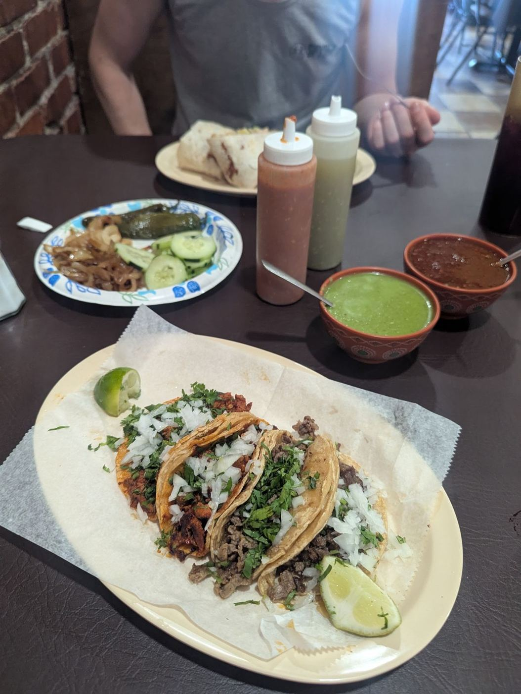

¡Lotería de tacos!
Tap a card to read what guests say.
Like being in Mexico
“Taqueria Jalisco is hands down my favorite Mexican restaurant in Kansas City. The food is always fresh, authentic, and full of amazing flavor.🤤 What really sets this place apart is the very…”
“Very friendly people! The food is amazing and the place reminds me of being in Mexico. This is definitely a hidden gem!”
“Simple menu, delicious food, friendly service. Straight forward restaurant with a down home feeling. I enjoy this restaurant! Update: Still loving this restaurant!!! 😀”